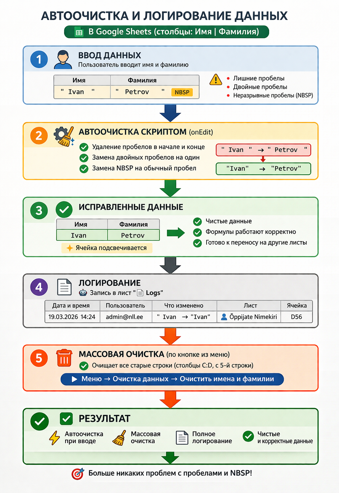

Лист используется для хранения и верификации информации об учащихся, включая автоматизированные проверки данных, визуальные метки и зависимые списки. Реализована система улучшенного визуального отслеживания состояния записей.
📌 Основной функционал
🔒 Защита и фиксирование
Закреплены строки заголовков — не прокручиваются при вертикальной прокрутке.
Закреплены столбцы B, C, D — всегда отображаются при горизонтальной прокрутке.
Защищены от редактирования:
строка 1 — название формы;
строка 2 — разделительная;
строка 3 — заголовки;
столбец B — автоматическая нумерация;
столбец X — сообщения о кириллице.
🔢 Автоматическая нумерация
Столбец B - Nr. автоматически проставляет порядковый номер, если заполнены ячейки C (Ees-ja) и D (Perekonnanimi).
При удалении данных — номера автоматически перенумеруются.
Нумерация не применяется, если одна из ячеек C или D не заполнена.
⚠️ Валидация данных
X: Проверка ввода кириллицы — при обнаружении выводится предупреждение.
F и J: Проверка номера группы и класса:
допускаются цифры или цифры + строчные латинские буквы;
запрещены пробелы.
J: Отдельная проверка на наличие пробелов между цифрой и буквой.
Q: Проверка номера телефона — допустим только ввод цифр.
E-mail: Проверка корректности адреса электронной почты.
U и V: При наличии данных — применяется условное форматирование:
строка выделяется светло-красной заливкой.
C и D: Созданы правила проверки и очистки данных с помощью Google Apps Script:
Проблема – чистота данных:
Пользователи при вводе имён и фамилий в таблице журнала иногда вставляют (при копировании из других источников информации) лишние пробелы или специальные символы (например NBSP). Визуально в ячейке лишние пробелы или специальные символы заметить может опытный пользователь, кто работает с данными, имеет опыт и знает где можно проконтролировать.
Из-за этого:
алгоритм сравнения данных и формулы скриптов работали некорректно;
перенос данных на другие листы “ломался” и условное форматирование на них не применялось.
Решение:
Автоматическая очистка при редактировании или вводе новых данных:
Когда пользователь меняет ячейку с именем или фамилией (столбцы C и D, начиная с 5-й строки), скрипт отрабатывает автоматически:
удаляет пробелы в начале и конце строки;
заменяет двойные пробелы на одинарные (необходимо если имя или фамилия состоит из двух отдельных слов, разделённых пробелом, а не дефисом);
заменяет неразрывные пробелы (NBSP) на обычные
Если значение меняется, ячейка подсвечивается желтым цветом (это временное/спорное решение, которое в дальнейшем может быть отменено), чтобы показать, что данные в ячейке были исправлены.
Массовая очистка (пункт меню только для администратора):
Для уже введённых данных можно запускать скрипт вручную из меню — он проходит по всем строкам листа и очищает все имена и фамилии по тем же правилам.
Логирование:
Любое исправление фиксируется в листе 📄 Logs
(данный лист журнала доступен (может видеть) только администратору):
кто изменил;
количество изменений;
исходное и очищенное значение (для сравнения);
какая ячейка была изменена;
дата и время.
Результат:
Новые данные очищаются автоматически при вводе;
Старые данные можно быстро очистить массово (администратор);
Лог фиксирует все изменения для прозрачности и аналитики;
Формулы, скрипты и сравнения теперь работают корректно, лишние пробелы и специальные символы больше не мешают;
Нет необходимости контролировать пользователя в процессе ввода данных.
Наглядно ознакомиться как осуществлём алгоритм работы можно на 👉
инфографике
×

.
📅 Ввод даты через календарь
Столбцы T и V:
двойной клик открывает календарь;
дата отображается в формате месяц + год.
🧠 Примечания и цветные маркеры (колонка A)
Если к ячейке D5:D (фамилия) добавлено примечание, в колонке A появляется цветной маркер:
Цвет
Значение
Примеры ключевых слов
🔴
Критическое
важно, критично, срочно
🟡
Обычное (по умолчанию)
нет ключевых слов
🔵
Техническое
тех
🟢
Положительное
молодец, отлично, хорошо
🟥
Медицинское
аллергия, укачивает, астма, здоровье
❌
Удалено
примечание удалено
⚙️ Маркеры добавляются автоматически с помощью Apps Script при каждом изменении, и отображается toast-уведомление о результате.